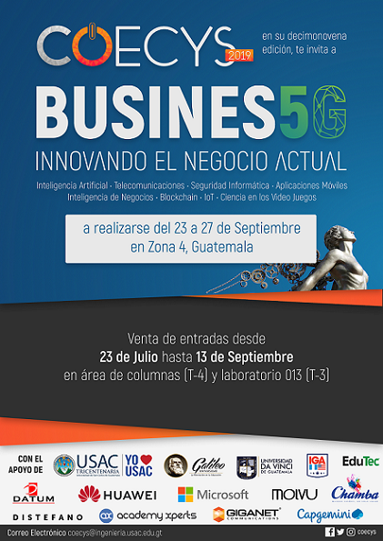

Es hora de regular el contenido de internet
Rubén Emilio Osorio Sotorro
rubenosorio88@gmail.com
Estudiante de Ingeniería en Ciencias y Sistemas - USAC
Si bien el internet es una herramienta muy poderosa y necesaria en pleno siglo XXI, con millones y millones de páginas en las cuales podemos consultar el clima, que ofertas tendrá nuestro restaurante favorito, poder reservar un vuelo a la Patagonia simplemente con un par de clics en la comodidad de nuestro hogar, solo imaginemos un momento si en realidad todas las personas que tenemos acceso a internet lo usáramos para nutrir nuestros conocimientos, para hacer investigaciones y compartir resultados donde más personas se unan y se genere más conocimientos a partir de un trabajo colectivo como se observa en la imagen 1, pero claro, eso no significa que no se haga, la página del MIT publica muchos artículos que son base para muchas otras personas que pueden empezar una investigación o continuarla basándose en estos artículos, pero si hacemos una media de para que usamos más el internet en este siglo veremos que lo menos que se hace es investigar, muchos se enfocan más en el uso de redes sociales, intentando ser famosos de alguna forma, por ejemplo, al subir algo que muchos llamarían “gracioso” a páginas como Instagram, todo esto es el comienzo de una plaga llamada “influencers”. Como se observa en la imagen 1 un grupo de personas que únicamente se encargan de subir contenido (la mayoría basura en mi criterio) a Internet, y además hay marcas que por hacerles publicidad les pagan por ello al tener una gran cantidad de personas que las siguen y admiran, y ese en realidad es el problema, porque estas personas no son unos genios de la matemática, ni hablan sobre el cosmos, muchos se dedican a hacer retos verdaderamente tontos que no tienen algún sentido, como meterse un preservativo por la nariz y sacarlo por la boca como en la imagen 2, muchos repudian este tipo de contenido inútil, pero hay otros que si les llama la atención, y como ven que la persona famosa del internet lo hace, ellos también deben hacerlo.
Imagen 1 - Fuente: Syda Productions
Leyendo un artículo del famoso noticiero británico BBC que tiene como título “El 90% de lo que está en internet es basura”, en dicho escrito podemos encontrar que ellos describen un par de leyes de personas que se dedicaron a analizar las siguientes situaciones:
Ley de Pommer, una persona puede cambiar de opinión en base a la información que lee en internet. La naturaleza de ese cambio será que pasará de no tener ninguna opinión a tener la opinión errada.
Y es que esta ley tiene tanta razón con que hay personas creen todo lo que dice internet, y si hablamos de que la mayoría de contenido es basura, entonces la información también es basura.
Imagen 2 - Fuente: Patricia Carambula
Es donde comienzo a hablar sobre las restricciones que debe tener internet y es que si algo no está regulado se pierde el control, el problema a veces es ¿Quién lo regula? ¿Cómo decide que es bueno o malo?, pero es que es una realidad, la NASA podría hacer una transmisión desde marte que no muchas personas mirarían, pero uno de los videos más vistos en la plataforma de videos Youtube es un tipo cantando sobre una manzana, una piña, y un lápiz, visto por más de 255 millones de personas hasta este año 2019.
Imagen 3 - Fuente: Youtube usuario: Pikotaro
Está bien, páginas como Youtube no nos obligan a ver este tipo de contenido, el problema quizá es que este tipo de páginas alientan a las personas a seguir compartiendo este contenido ya que reciben un pago enorme por la cantidad de visitas que llegan a tener sus videos, pero sí utilizan algoritmos para hacer recomendaciones como “lo más visto” o los temas “hot” del momento, “El sistema de recomendación de vídeos de YouTube se enfrenta, una vez más, a la polémica. Algunos usuarios han criticado el algoritmo de la plataforma, alegando que promueve los vídeos de teorías de la conspiración y de fake news.”2
Y es que como todo en la vida el dinero es motivación, si no me van a pagar por hacer tonterías en internet, para que las voy a hacer, hace poco Mark Zuckerberg (creador de la famosa red social Facebook) hablaba de “Regular el internet” como se menciona en CNN “El fundador de Facebook, Mark Zuckerberg, publicó una misiva haciendo un pedido a los gobiernos y los reguladores para que impongan más controles sobre lo que se publica en internet, la protección de datos y otro temas”.3
Zuckergerg propone 4 aspectos que requieren especial cuidado:
Sobre el contenido perjudicial: Mark menciona que se debe estandarizar y hacer más rígidas las políticas sobre el contenido que se sube a cada plataforma y en sus procesos, se necesita un enfoque más estandarizado.
Integridad en las elecciones: También menciona que deben haber leyes que se aplican en cada gobierno que debe regular que clase de contenido es permitido por cada candidato a hacerse publicidad, también de esto viene el tema de los “netcenters” y encuestas falsas donde posicionan a un candidato a favor sobre los otros.
Privacidad de los datos: si bien todo lo que está e internet pareciera no ser privado para nada, “La nueva regulación de privacidad en los Estados Unidos y en todo el mundo debería basarse en las protecciones que proporciona el Reglamento General de Protección de Datos (GDPR, por sus siglas en inglés). Éste debería proteger tu derecho a elegir cómo se usa tu información y no de requerir que los datos se almacenen de manera local, ya que lo haría más vulnerable al acceso injustificado.”4
Portabilidad en los datos: aquí se refiere que hay que aclarar las reglas sobre quien es responsable de proteger la información que las personas cuando esta se mueve entre cada servicio.
En mi punto de vista personal, contenido que no promueve nada bueno en las personas es perjudicial, perjudicial para sus mentes.
Conclusiones:
Se debe dar menos prioridad a videos y contenidos de influencers en las redes pagándoles poco sobre su contenido.
La regulación es un tema que se da abasto y se deben tener muchos debates al respecto.
El contenido que cada persona consume en internet es siempre su responsabilidad, pero las plataformas deben de promover contenido más informativo, ya depende del usuario si lo ve o no.
Referencias bibliográficas:
BBC Mundo (26/01/2014) El 90% de lo que está en internet es basura.
Xose Llosa (12/2/2018). Youtube dejará de visibilizar a creadores tóxicos
Xavier Serbia (01/04/2019). ¿Qué sugiere Facebook para regular internet?
Sandra Pérez (02/04/2019). 4 Formas de regular internet según Zuckerberg.
